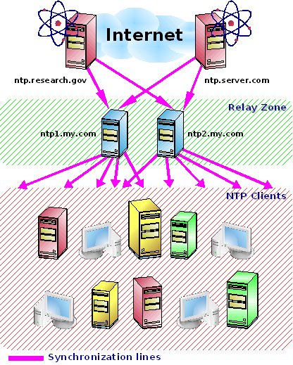

Tüm sisteminizde kesin zamana sahip olmak katý að güvenliði stratejisine (basit bir güvenlik duvarý kutusundan daha fazlasýyla elde edilir) sahip olmak kadar önemlidir. Bu, iyi bir sistem yönetiminin birincil bileþenlerinden biridir ve organizasyonun ve güvenliðin baþýnda gelir. Özellikle daðýtýk uygulamalarýn yönetiminde, internet servislerinde ve hatta daðýtýk güvenlik aracýnda kesin zaman gereklidir.
Burada protokolü incelemeyeceðiz, fakat bu harika buluþun Internete nasýl bir yaygýnlýk kazandýrdýðý bizim iþimize yarayacak. Daha fazlasýný http://www.ntp.org/ adresinde bulabilirsiniz.
Bir kez sisteminiz uygun bir þekilde kurulduðunda, NTP, çalýþan uygulamalarý etkilememek için ufak ayarlamalar yaparak zamanýn doðru olmasýný saðlar.
Kesin zaman atomlarýn elektron frekanslarýný temel alan donaným saatinden elde edilebilir. Ayrýca GPS (Küresel Konumlandýrma Sistemi) tabanlý yöntemler de mevcuttur. Birincisi daha kesindir fakat ikincisi de oldukça iyidir. Atomik saatler çok özel ve pahalý ekipmanlar gerektirir, fakat geliþtiricileri (genellikle üniversiteler ve araþtýrma labarotuvarlarý) onlarý NTP çalýþtýran bilgisayarlara baðlarlar ve sonuçta onlarý ücretsiz olarak kullanmamýza izin verirler. Sistemimizi bu þekilde eþzamanlarýz.
Þunlara ihtiyacýnýz olacak:
- Ýnternet'e doðrudan veya dolaylý (güvenlik duvarý üzerinden) baðlantý.
- NTP sunucularý seçin. Kamuya açýk pool.ntp.org sunucusunu kullanabilirsiniz veya NTP sitesindeki katman 2 kamuya açýk zaman sunucularýndan birini seçebilirsiniz. Eðer Ýnternet eriþiminiz yoksa, WAN yöneticiniz (zeki biri olmalý) size bazý dahili adresler saðlayabilir.
- Eþzamanlamak istediðiniz tüm sistemler için NTP paketiniz olsun. Gözde Linux daðýtýmýnýzýn CDsinde RPM olarak bulabilirsiniz veya rpmfind.net'de arama yapýn.
Güzel bir mimari örneði:
Þekil 2.1. NTP sunucu için Yerel Nakil Sunucu

Eðer eþzamanlanacak bir çok makinanýz varsa hepsini seçtiðiniz uzak NTP sunucuya yönlendirmeyin. Sunucularýnýzdan sadece ikisi uzak NTP sunucuya eriþmeli, ve diðerleri bu ikisiyle eþitlenmeli. Bunlara Nakil Sunucularý diyeceðiz.
Nakil sunucunuz aðda ulaþýlabilen herhangi bir makina olabilir. NTP düþük bellek ve iþlemci harcar. Bunun için bu iþe adanmýþ bir makinaya gerek yoktur.

Ýpucu Yerel Nakil Sunucunuz için ntp1.my.com ve ntp2.my.com gibi bir mahlas oluþturmak iyi bir fikirdir. Ýstemci makinalarý yapýlandýrýrken yalnýzca bu isimleri kullanýn. Bu yolla NTP iþlevselliðini farklý bir Nakil Sunucuya (farklý IP ve konak ismiyle) istemcileri yeniden yapýlandýrmadan taþýyabilirsiniz. Bu tür mahlaslar oluþturmak için DNS yöneticisine baþvurun.
- Nakil Sunucunuz için
-
/etc/ntp.conf dosyasýný düzenleyin ve seçtiðiniz uzak sunucularý ekleyin:
Örnek 2.19. Nakil sunucunun /etc/ntp.conf dosyasý
.. server otherntp.server.org # server.org'daki bir katman 1 sunucu server ntp.research.gov # research.gov'daki bir katman 2 sunucu ..
Yine pool.ntp.org kamu sunucusunu kullanabilirsiniz, veya NTP sitesindeki katman 2 kamuya açýk zaman sunucularýnýn listesini alabilirsiniz.
- Ýstemcileriniz için
-
/etc/ntp.conf dosyasýný düzenleyin ve Nakil Sunucularýnýzý standart ismiyle ekleyin:
Örnek 2.20. Ýstemci makinanýn /etc/ntp.conf dosyasý
.. server ntp1.my.com # Ýlk yerel Nakil Sunucum server ntp2.my.com # Ýkinci yerel Nakil Sunucum .. ..
Makinanýzýn NTP sunucularýyla karþýlaþtýrýldýðýnda birkaç dakikadan daha büyük farklýlýk gösteren UTC'ye sahipse NTP çalýþmayacaktýr. Bu yüzden önce tam eþleme yapmalýsýnýz ve bunu yoðun olmayan zamanda yapmanýzý tavsiye ederim. Bu sadece ilk NTP kurulumu sýrasýnda gereklidir. Bir daha yapmanýza gerek yoktur:
Örnek 2.21. Ýlk eþzamanlama

Ýlk tam eþzamanlama. 15 saniye gerideyiz.

Ýkinci tam eþzamanlama sadece emin olmak için. Þimdi tam olarak 0 saniye fark var.
Son adým her iki makinada da NTP'yi yeniden baþlatmak:
bash# service ntpd restart
Þimdi herþey kurulmuþ durumda. NTP yumuþak bir biçimde makinanýzý eþzamanlý tutacak. Bu iþlemi NTP Sorgusu (ntpq komutu) kullanarak izleyebilirsiniz:
Örnek 2.22. Örnek bir eþzamanlama durumu
bash# ntpq -p remote refid st t when poll reach delay offset jitter ============================================================================== -jj.cs.umb.edu gandalf.sigmaso 3 u 95 1024 377 31.681 -18.549 1.572 milo.mcs.anl.go ntp0.mcs.anl.go 2 u 818 1024 125 41.993 -15.264 1.392 -mailer1.psc.edu ntp1.usno.navy. 2 u 972 1024 377 38.206 19.589 28.028 -dr-zaius.cs.wis ben.cs.wisc.edu 2 u 502 1024 357 55.098 3.979 0.333 +taylor.cs.wisc. ben.cs.wisc.edu 2 u 454 1024 347 54.127 3.379 0.047 -ntp0.cis.strath harris.cc.strat 3 u 507 1024 377 115.274 -5.025 1.642 *clock.via.net .GPS. 1 u 426 1024 377 107.424 -3.018 2.534 ntp1.conectiv.c 0.0.0.0 16 u - 1024 0 0.000 0.000 4000..00 +bonehed.lcs.mit .GPS. 1 u 984 1024 377 25.126 0.131 30.939 -world.std.com 204.34.198.40 2 u 119 1024 377 24.229 -6.884 0.421Sütunlarýn Anlamlarý:
- remote
- Uzak NTP Sunucunun ismi. -n seçeneðini kullanýrsanýz sunucunun konak-ismi yerine IP adresini göreceksiniz.
- refid
- Her sunucunun kendi zamanýný nereden aldýðýný gösterir. Bu konak-ismi veya Küresel Konumlama Sistemi kaynaðý .GPS. benzeri birþey olabilir.
- st
- Katman uzak sunucunun önceliðini gösteren 1'den 16'ya kadar bir rakamdýr. 1 en kesin, 16 'sunucu ulaþýlamaz' anlamýndadýr. Sizin katmanýnýz kesin uzak sunucunuzun bir fazlasý olmalýdýr. Asla katman 1 sunuculara baðlanmayýn, katman 2'leri kullanýn! Katman 2 sunucularýn amacýmýza uygun olmasýnýn yanýnda, bu tutum Katman 1 sunucular üzerindeki trafiði düþürdüðü için de iyidir.
- poll
- Zaman istekleri arasýndaki oylama zamaný (saniyelerle). Deðer, izin verilen en az ve en çok oylama deðerleri aralýðýndadýr. Ýlk olarak deðer eþzamanlamanýn daha hýzlý olmasýný saðlamak için küçüktür. Saatler eþzamanlý olduktan sonra oylama deðeri að trafiðini ve zaman sunucudaki yükü azaltmak için artar.
- reach
- Bu, 8 bit bir dizinin sekizlik gösterimidir. Bu sayý yerel makinanýn sunucuya son 8 denemesini gösterir. Uzak sunucu eriþildiyse bit 1 olur.
- delay
- "saat kaç" isteðine cevap verilmesi için gereken zaman miktarýdýr (saniyeler).
- offset
- En önemli deðer. Yerel ve uzak sunucu arasýndaki zaman farký. Eþzamanlama durumunda bu fark azalýr ve bu da makinanýn zamanýnýn daha doðru olduðu anlamýna gelir.
- jitter
- Daðýlým -veya salýným da denir- birçok ardýþýk istek/cevap çiftleri farkýnýn sapmasýnýn istatistiksel bir ölçüsüdür. Küçük daðýlým deðerleri büyük daðýlým deðerlerine tercih edilir. Küçük daðýlým deðerleri daha doðru bir eþzamanlama yapýlmasýna izin verir.
Konak-isminden önceki iþaretleri anlamlarý:
- -
- Yerel NTP servisinin bu sunucuyla pek uyuþmadýðýný gösterir.
- +
- Yerel NTP servisinin bu sunucuyla uyuþtuðunu gösterir.
- x
- Kötü bir konaða iþaret eder.
- *
- Geçerli gözdeyi gösterir.
Her zaman, bilgisayar yeniden baþlatýldýðýnda bile çalýþan bir NTP kullanmak isteyebilirsiniz. Her makinada þunu yapýn:
bash# chkconfig --level 2345 ntpd on
Bu otomatik baþlatmayý saðlar.
Eðer makinanýnýz uzun süre (aylar, yýllar) yeniden baþlatýlmadan çalýþýyorsa, doðru olmayan donaným saati ve sistem saati (artýk oldukça doðru) arasýnda büyük tutarsýzlýklar göreceksiniz. Modern Linux daðýtýmlarý sistemin her kapanýþýnda sistem saatini donaným saatine setclock komutuna benzer bir mekanizmayla kopyalar. Bu yolla bir sonraki Ýþletim Sistemi açýlýþýnda neredeyse kapattýðýnýz zamanki kadar doðru bir zaman elde edersiniz.